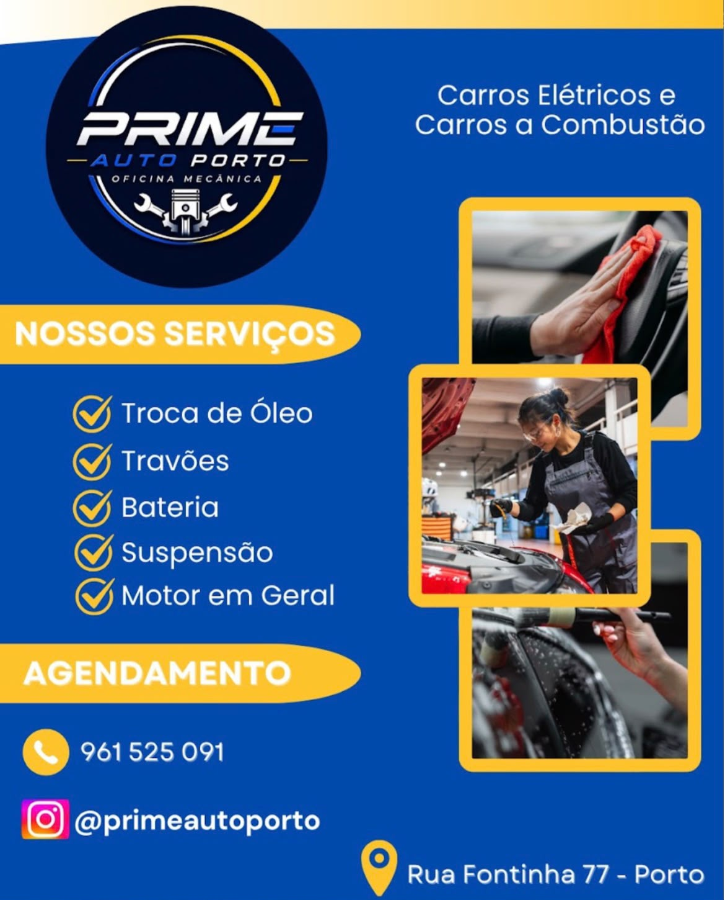
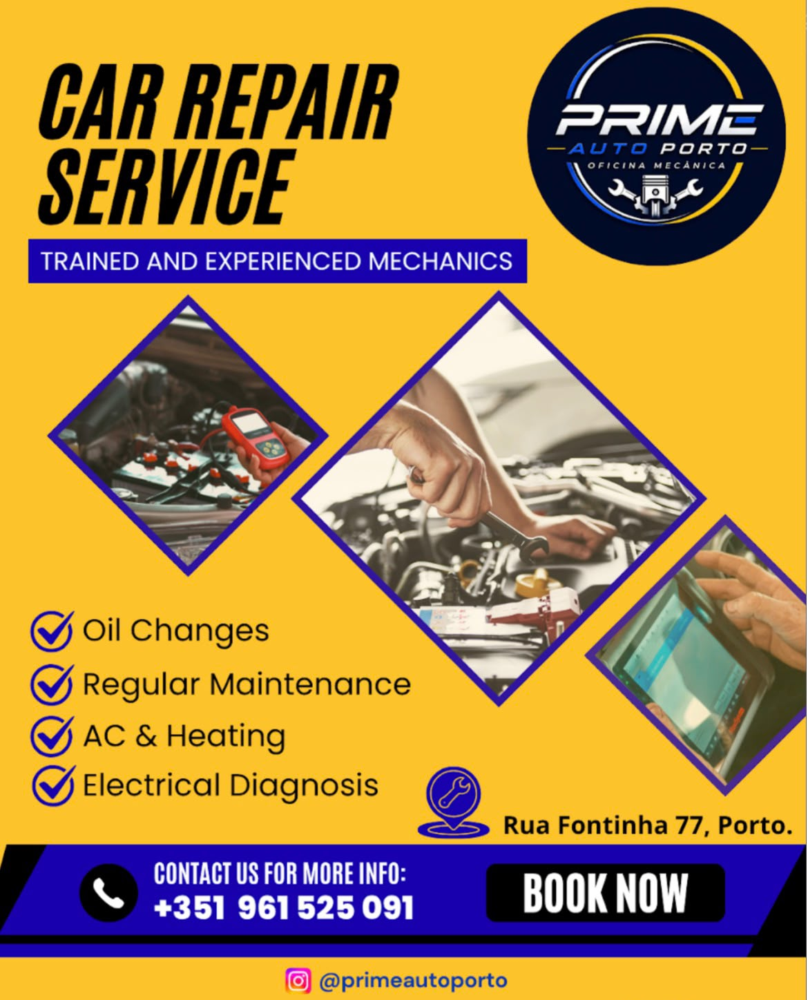

Ar condicionado
Conforto e eficiencia para todas as estacoes.
Mecânica geral, diagnóstico eletrónico e manutenção preventiva com rigor, transparência e atendimento profissional.
A oficina
Oficina Mecânica especializada em mecânica geral, diagnóstico eletrónico, travões, suspensão, direção, revisões e manutenção preventiva.
Prestamos assistência a veículos a combustão, híbridos e elétricos, utilizando equipamentos modernos e profissionais qualificados.
Atendemos clientes particulares e empresas, oferecendo um serviço transparente, eficiente e de confiança para manter o seu veículo sempre em perfeitas condições de funcionamento.

Servicos
Da manutencao de rotina a reparacoes tecnicas, cuidamos dos sistemas essenciais da sua viatura.
Conforto e eficiencia para todas as estacoes.
Verificacao, substituicao e manutencao.
Analise precisa para identificar anomalias.
Reparacoes eletricas com criterio tecnico.
Seguranca e resposta em cada travagem.
Intervencoes para uma conducao segura.
Estabilidade, conforto e controlo.
Assistencia aos componentes de transmissao.
Ar mais limpo para o funcionamento do motor.
Qualidade do ar no interior da viatura.
Lubrificantes e filtros adequados.
Desempenho e funcionamento equilibrado.
Visibilidade cuidada em todas as viagens.
Intervencao focada no sistema de alimentacao.
Planos preventivos para a sua viatura.
Controlo de carga e estado do sistema.
Componentes revistos para maior seguranca.
Diagnostico e reparacao de comandos.
Servico tecnico para o coracao da viatura.
Resolucao de falhas e componentes eletricos.
Substituicao com foco em seguranca e estabilidade.

Diferenciais
Tecnologia para uma analise mais rigorosa.
Avaliacao tecnica antes de cada proposta.
Comunicacao direta e resposta atenta.
Componentes adequados a cada intervencao.
Informacao clara antes de avancar.
Experiencia pratica para diferentes viaturas.
Processo
Um acompanhamento claro, para que saiba sempre em que ponto esta a sua viatura.
Analisamos a viatura e identificamos a origem do problema.
Apresentamos uma proposta clara e detalhada.
Avancamos apenas depois da sua confirmacao.
Executamos o servico com precisao e controlo.
Entregamos a viatura pronta a circular.
Galeria
Conheca a oficina, os servicos e os materiais de comunicacao da Prime Auto Porto.
Avaliacao
Classificacao atual de 5,0 no Google.
2 avaliacoes publicadas.
Oficina de reparacao de automoveis no Porto.
Fale com a Prime Auto Porto e marque a proxima intervencao da sua viatura.
Marcar Servico